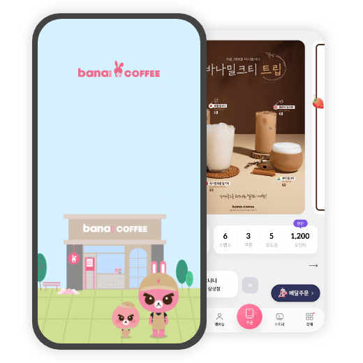
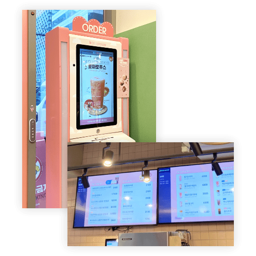
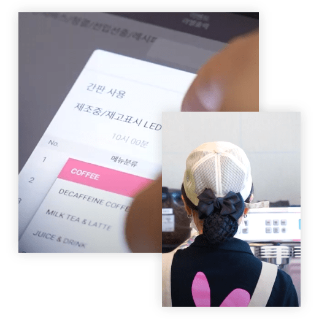

자체 개발한 매장관리 통합 솔루션 FoodPro를 2018년도부터
프랜차이즈 카페 바나프레소에 공급하여 운영하고 있습니다.
자체 개발한 매장관리
통합 솔루션 FoodPro를
2018년도부터
프랜차이즈 카페 바나프레소에
공급하여 운영하고 있습니다.
바나플에서 운영하는 통합서버와 각 고객사별 App, Kiosk, POS 및 자동화된 주방기기들을 유기적으로 연결하여 운영할 수 있는
매장관리 통합 솔루션입니다. FoodPro가 제공하는 무인 주문 시스템을 통해 인건비를 절감할 수 있으며, 효율적인 데이터 관리가 가능하여
운영 비용을 절약할 수 있게 해줍니다. 현재 카페 바나프레소(2022년 기준 약 80여개 매장)를 통해 수년간 운영되어 안정성이 검증되었으며
지속적인 기능 업그레이드가 이루어지고 있습니다.
바나플에서 운영하는
통합서버와 각 고객사별 App, Kiosk, POS 및
자동화된 주방기기들을 유기적으로 연결하여
운영할 수 있는 매장관리 통합 솔루션입니다.
FoodPro가 제공하는 무인 주문 시스템을 통해
인건비를 절감할 수 있으며, 효율적인 데이터 관리가
가능하여 운영 비용을 절약할 수 있게 해줍니다.
현재 카페 바나프레소
(2022년 기준 약 80여개 매장)를 통해
수년간 운영되어 안정성이 검증되었으며
지속적인 기능 업그레이드가 이루어지고 있습니다.
개발/유지보수
통합운영서버,
통합데이터베이스
본사/운영
서비스운영권한, 웹어드민
MFC관리프로그램
-
모바일앱
상품전시, 주문/발주
멤버십, 커뮤니케이션 -
키오스크/DID
상품전시, 주문/발주
멤버십, 광고/홍보 -
주방 자동화 장비
라벨지/영수증 출력,
픽업호출/스피커 출력,
각종 주방 자동화 기기
(지속 개발중) -
POS
주문관리,정산관리
영업관리
-

Mobile App
브랜드 이용 고객들만을
위한 전용 모바일앱- 안드로이드/iOS 지원
- 주문 및 결제기능
- 포인트 충전 서비스
- 스탬프/쿠폰/포인트 등 멤버십 서비스
- 각종 프로모션 및 이벤트 지원
- 전화번호 기반으로 키오스크 고객과 회원정보 연동
- 전화번호 기반으로 키오스크 고객과 회원정보
연동
-

Kiosk / DID
쉽고 편리한 무인 주문기기와
상품홍보에 효과적인 DID의 연계- 사용자 중심의 직관적인 UI/UX 설계
- 메뉴선택부터 결제까지 물 흐르듯
자연스러운 주문 프로세스 - 브랜드 아이덴티티를 느낄 수 있는 고유의 디자인
- 브랜드 아이덴티티를 느낄 수 있는 고유의
디자인 - 전화번호 기반 간편한 회원등록과 멤버십 서비스
- 원터치 높이 조절 기능
- 상품 홍보에 효과적인
DID(Digital Information Display) 연계.
-

POS 및 관리프로그램
터치 기반 통합 매장
주문/매장 관리 프로그램- 여러 직원이 동시에 다중 주문 처리가
가능한 쉽고 편리한 UI/UX - 주문 접수/거부, 주문결제/취소,
카드취소 등 실시간 주문 처리 - 영수증, 라벨지 프린트 등 주변기기 연동 및
QR스캔을 통한 자동 픽업 호출 기능 - 매장 운영 설정, 재고관리, 현금결제, 직원결제 등 지원
- 매장 운영 설정, 재고관리, 현금결제,
직원결제 등 지원 - 다수의 배달대행업체와 연동되어
효율적인 배달주문 관리 지원 - PC프로그램, 웹사이트, 모바일 앱 등을 통한
매장업무 관리 기능 제공
- 여러 직원이 동시에 다중 주문 처리가
-
스마트한 주방 자동화 장비
카페에서 사용하는
각종 주방장비의 자동화 지향-
바나플은 카페에서 사용하는 각종 레거시 주방장비의
기존 구조에 혁신을 가하여, IT기술의 접목을 통해
보다 나은 기능의 제품으로 새롭게 개발을 해 나가고 있습니다. -
바나플은 카페에서 사용하는 각종 레거시
주방장비의 기존 구조에 혁신을 가하여,
IT기술의 접목을 통해 보다 나은 기능의
제품으로 새롭게 개발을 해 나가고 있습니다. -
인터넷을 통해 시스템과 연결되어
지능적으로 컨트롤되는다양한 주방장비들은
한 차원 높은 스마트한 주방운영을 가능하게 합니다. -
인터넷을 통해 시스템과 연결되어 지능적으로
컨트롤되는다양한 주방장비들은 한 차원 높은
스마트한 주방운영을 가능하게 합니다.
-
바나플은 카페에서 사용하는 각종 레거시 주방장비의
-
통합 서버 시스템
빠르고 안정적인
통합 운영 서버의 구축과 운영-
실시간으로 대량의 주문과 결제정보 처리를
위해서는 안정적인 서버 시스템을 구축하고
이를 운영할 수 있는 기술과 노하우가 필요합니다. -
실시간으로 대량의 주문과 결제정보 처리를
위해서는 안정적인 서버 시스템을 구축하고
이를 운영할 수 있는 기술과 노하우가
필요합니다. -
바나플의 통합 서버 시스템은 10년 이상 하루 수십만건의
주문데이터를 처리하고 안전하게 정보를 데이터베이스에
저장하고 관리할 수 있는 노하우를 가지고 있습니다. -
바나플의 통합 서버 시스템은 10년 이상 하루
수십만건의 주문데이터를 처리하고 안전하게
정보를 데이터베이스에 저장하고
관리할 수 있는 노하우를 가지고 있습니다.
-
실시간으로 대량의 주문과 결제정보 처리를